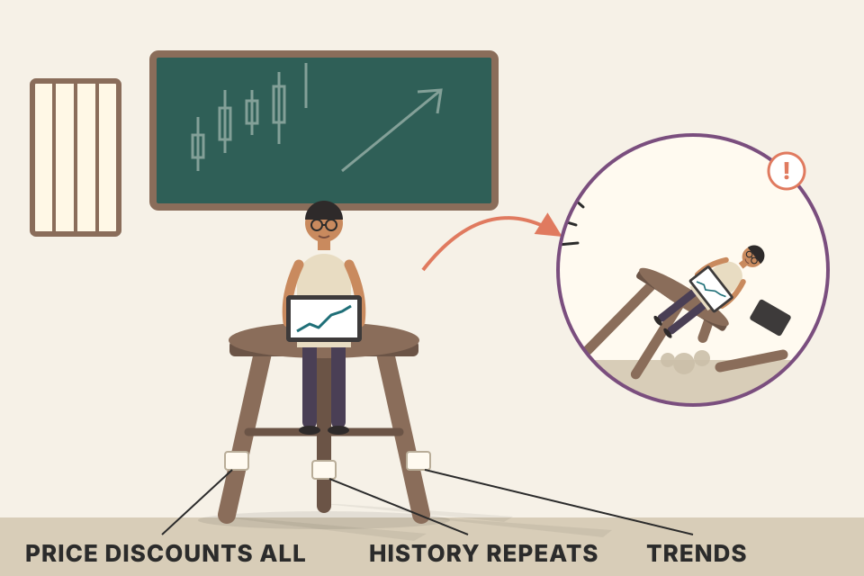
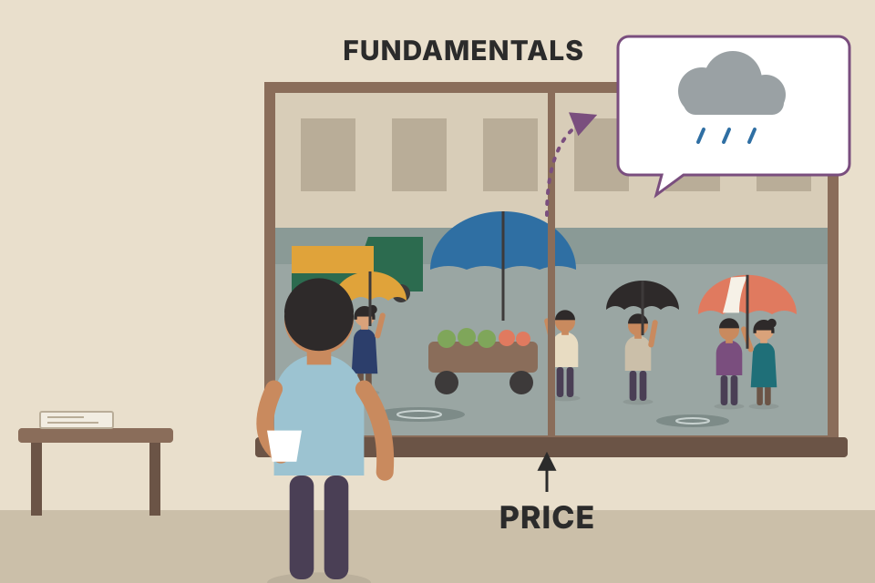
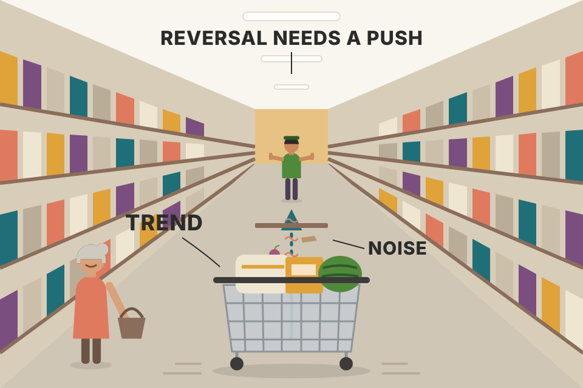

Before any tool, Murphy sets out what technical analysis claims and the three beliefs it rests on. He then compares it with fundamental analysis, shows how stocks and futures differ, and answers the main criticisms (self-fulfilling prophecy, "the past can't predict", Random Walk). This page goes through all of it in order. Charts use simulated prices, not real market data.
One definition, three beliefs, then everything else is either a consequence of those beliefs or a defence of them.
Murphy says you should understand what technical analysis claims, and the reasoning behind those claims, before learning any of its tools. So the chapter defines the subject, lays out its philosophical premises, separates it from fundamental analysis, and answers some common criticisms.
Definition (in my words): technical analysis studies market action, mostly with charts, in order to forecast where prices will trend next. "Market action" covers the technician's three main sources of information:
Murphy finds the popular phrase "price action" too narrow, because most technicians also use volume and open interest. Having made that point, he uses "price action" and "market action" to mean the same thing for the rest of the discussion.
For an engineer, "market action" is just an append-only time series. Each bar (a day, a week, a minute) is one record, and every tool in the rest of the book is a function of this series and nothing else:
Volume counts contracts that changed hands during the bar. Open interest is a stock, not a flow: the number of contracts still open at the end of the bar. Each trade has a buyer and a seller, and whether each side is opening or closing a position decides what happens to it. Click the trades below and watch the counter.
Rule: both sides opening adds one contract; both sides closing removes one; one opening and one closing just hands a position over, so open interest doesn't change. Volume rises by one on every trade. Chapter 7 reads these changes.
The technical approach rests on three premises:

A three-legged stool. Leg 1 says the chart contains all the information. Leg 2 says that information shows up as trends you can ride. Leg 3 says the patterns you learn today will still mean the same thing tomorrow. Remove any leg and the stool falls over. Murphy is that blunt about the first two: unless you fully understand and accept premise 1, nothing that follows makes much sense; unless you accept that markets really do trend (premise 2), there's no point reading any further.
Untick a premise. The chapters that lean on it get struck out. The mapping is my reading of the book, not Murphy's list, but it shows why he treats the premises as foundations rather than opinions.
Why premise 1 takes down every forecasting chapter: if the price didn't contain the information, no tool that only reads price could recover it. Money management (Ch.16) survives any knockout because it controls risk whatever method you forecast with. Hover a chip to see which premises I think it leans on.
| Premise | What a trader does with it (my reading) | How you'd test it | On this page |
|---|---|---|---|
| 1 · discounts everything | Don't trade news that's already public; ask what the price is saying. | Does price move before the news is published? (an "event study") | section 03 (supply/demand), 06 (price leads reports) |
| 2 · trends | Trade in the direction of the trend; stay in until it shows signs of turning. | Do past returns predict the sign of the next return? (autocorrelation, momentum) | section 04 (pooled persistence test), 17 (how much data it takes to detect weak persistence) |
| 3 · history repeats | Learn the pattern catalogue (Chs 5, 6, 12) and expect the same reading next time. | Does a rule found on old data keep working on later data? (out-of-sample test) | section 12 (a rule fitted on old data, judged on new data), 16 (does projecting the past beat "no change"?) |
Murphy calls this probably the cornerstone of technical analysis. The technician believes that anything that could affect the price (fundamental, political, psychological or anything else) is already reflected in the price. So studying price action is all you need. Unless this premise is fully understood and accepted, Murphy says, nothing else in the book makes much sense. The claim may sound presumptuous, but he argues it's hard to disagree with once you think about what it really means.
The reasoning runs through supply and demand. All the technician is really claiming is that price action should reflect shifts in supply and demand. If demand is greater than supply, prices should rise; if supply is greater, they should fall. That's the basis of all economic and fundamental forecasting. The technician turns it around: if prices are rising, for whatever reason, demand must be greater than supply and the fundamentals must be bullish; if prices are falling, the fundamentals must be bearish. So the technician is really studying fundamentals indirectly. Most technicians would agree that the underlying forces of supply and demand (the economic fundamentals) are what cause bull and bear markets. Charts don't make markets move; they reflect the bullish or bearish psychology of the market.
As a rule chartists don't worry about why prices move. Often, early in a trend or at turning points, nobody seems to know exactly why. The approach can look overly simple, but Murphy says this premise becomes more convincing the more market experience you have. If everything that affects price ends up in the price, studying the price is enough. By studying price charts and a host of supporting indicators, the chartist lets the market say which way it is most likely to go, rather than trying to outsmart or outguess it. Every technical tool later in the book is just an aid to studying market action. The chartist knows there are reasons behind every move; they just don't think knowing them is necessary for forecasting.

You see people outside holding umbrellas. You don't need the weather report to know it's raining. The umbrellas (price) are the result of the rain (fundamentals), so watching them tells you about the rain.
A textbook supply-and-demand toy (my model, not Murphy's). Buyers want more at lower prices (falling line); sellers offer more at higher prices (rising line). The price settles where the two cross, because only there is every buyer who wants to buy at that price matched by a seller. A piece of news, whatever it is, does one thing: it shifts a line. Push demand up, or pull supply back, and at the old price buyers now want more than sellers offer. Buyers bid up until the gap closes. The technician only sees the last step, the price rising, and reads back "demand exceeded supply at the old price". Try it: a demand rise of 12 and a supply cut of 12 give the same new price. The chart can't tell which happened, and Murphy's point is that for forecasting it doesn't need to.
Where this breaks down: the toy assumes the price fully adjusts. Section 06 shows that the price leads the published fundamentals; it does not mean price is always "right", only that it reacts first.
The idea of trend is absolutely essential; again, unless you accept that markets do trend, Murphy says there's no point reading further. The whole point of charting is to spot trends early and trade in their direction. Most technical techniques are trend-following: they try to identify an existing trend and follow it. Figure 1.1 is his example of an uptrend: a monthly line chart of the S&P 500 from January 1979 to February 1998, climbing from under 200 to about 1000 with only a few setbacks along the way. Its caption restates the premise: markets trend, and those trends tend to persist.
The corollary: a trend in motion is more likely to continue than to reverse. Murphy notes this is an adaptation of Newton's first law of motion. Put another way, a trend keeps going in the same direction until it reverses. He admits this sounds almost circular, but the whole trend-following approach depends on riding an existing trend until it shows signs of reversing.

A heavy trolley rolling down a supermarket aisle. Once it's moving it keeps rolling; small bumps make it wobble but don't stop it. To stop or turn it, something has to push against it. Until you see that push, the best bet is that it keeps rolling.
The chart is a simulated 20-year monthly line, similar in length to Figure 1.1. It's drawn on a log scale (Murphy's figure uses an ordinary arithmetic scale; Chapter 3 explains why a log scale suits long, large moves). There are plenty of down months and several pullbacks, but almost every swing low (teal circle) stays above the one before; the readout counts them. That's what "trend in motion" means in practice: the up-down noise is still there, but the structure keeps pointing the same way.
"A trend in motion is more likely to continue than to reverse" is a claim about probabilities, so it can be measured. The test: look back over the last few months; if that stretch went up, bet the next month goes up too (and vice versa). Count how often the bet is right, and what the next month returned on average after "up" and after "down" look-backs.
To see what the test can and can't detect, I run it on simulated monthly returns where I control the answer. The dial φ (phi) is the return autocorrelation: how much of last month's move carries into this month. φ > 0 is "inertia" (Newton's first law, the premise); φ = 0 is a pure random walk; φ < 0 is a spring that pulls back (mean reversion). Zero drift throughout, so any edge comes only from φ.
What it shows (the readout gives the exact pooled numbers): with φ = 0 the bet is a coin flip (about 50%) and the two averages in the lower panel sit near zero, whatever look-back you choose. At φ = 0.1 the hit rate is only about 53% with a 1-month look-back and about 51% with a 12-month one, and the next month averages roughly +0.3% after an "up" month and −0.4% after a "down" one (1-month look-back). Small against a typical monthly swing of 4.5%, but the same sign over tens of thousands of bets. That's how a real trend-following edge usually looks: barely better than a coin on any single bet, worth having only over many bets. In this toy the carry-over only lasts a month or two, so the short look-back catches it best; the longer look-backs dilute it with old, irrelevant months. Set φ below zero and the same rule loses: trend following has no edge in a market that springs back. Whether real markets have φ > 0 is the question premise 2 bets on, and the one the Random Walk debate in section 17 is about.
Pooled over 300 simulated 20-year markets per setting (fixed seeds, not hand-picked), monthly volatility 4.5%. Simulated, not evidence about any real market.
price_physics_basics.md has the same idea in its "Inertia (1st law)" row: strong 12-month movers tend to keep going for a few months (the momentum effect). Your momentum rotation backtest is built on it.Much of technical analysis is really the study of human psychology. Chart patterns, identified and categorised over the past hundred years, are pictures on price charts that show whether the market's mood is bullish or bearish. Because these patterns worked in the past, technicians assume they'll keep working, since they reflect human psychology, which tends not to change. Other ways to say it: the key to understanding the future is studying the past, or the future is just a repetition of the past.
Watch any crowd queueing for a sale. The same mix of excitement, fear of missing out and panic when stock runs low shows up whether it's 1925 or 2025. The prices change; the people don't.
A tiny crowd model of my own (a simple version of the "chartists and fundamentalists" models economists use; not in Murphy). Two kinds of traders set each day's move. Trend-chasers buy after the price has risen over the last two weeks and sell after it has fallen (greed and fear). Value traders buy below a fixed fair value and sell above it. Add random news. Nothing else.
The two lines are two "eras" run with the same rules: one starts at a fair value of 40, the other at 4,000, with different random news. Both are drawn as price ÷ fair value, so 1.0 means fairly priced. The levels are a hundred times apart, yet the shapes (runs above value, overshoots, slides back) look alike, because the shapes come from the rules of behaviour, not the price level. That's premise 3 in mechanical form: if crowd psychology stays the same, the pictures it draws on a chart stay the same. Raise the share of chasers and the runs get longer and the overshoots bigger (the readout pools 100 runs per setting); set it to zero and the price just jitters around value.
Fundamental analysis studies the economic forces of supply and demand that make prices rise, fall or stay put. It looks at every relevant factor to estimate a market's intrinsic value (what it's really worth). If that value is below the market price, the market is overpriced and should be sold; if the price is below the intrinsic value, it's undervalued and should be bought.
Both approaches try to answer the same question (which way will prices go?) from opposite ends. The fundamentalist studies the cause of market movement; the technician studies the effect. The technician thinks the effect is all they need; the fundamentalist always has to know why. Most traders call themselves one or the other, but there's a lot of overlap: many fundamentalists know the basics of chart analysis, and many technicians have at least a passing awareness of the fundamentals.
The trouble is that charts and fundamentals often disagree, most of all at the start of important moves, when the fundamentals don't seem to explain what the market is doing. The two usually come back into line at some point, but often too late for the trader to act. Murphy's explanation: market price tends to lead the known fundamentals; put another way, price acts as a leading indicator of the fundamentals, or of the conventional wisdom of the moment. The known fundamentals are already "in the market", so prices are reacting to the unknown ones. Some of the most dramatic bull and bear markets began with little or no visible change in fundamentals; by the time the changes were known, the new trend was well under way.
With time, a technician gains confidence in reading the charts and gets comfortable when the market disagrees with conventional wisdom, even enjoying being in the minority. They know the reasons will eventually become common knowledge; they just aren't willing to wait for that extra confirmation before acting.
Murphy's conclusion: if you could use only one approach, it would logically be technical, because it includes the fundamental (fundamentals are reflected in price). Chart reading becomes a shortcut form of fundamental analysis. The reverse isn't true: fundamental analysis doesn't study price action. He thinks you can trade on technicals alone, and doubts anyone could trade on fundamentals alone.
My own illustration built to show the idea, not evidence. The hidden "true" business conditions (dashed) start improving on day 100. Price, which here follows the true conditions plus noise, starts climbing almost at once. The reported fundamental is published once a quarter and describes conditions as they were some days earlier, so it only shows the change later. The readout measures the lag. During that gap the chart says "up" while the published numbers still say "nothing has changed": exactly the conflict Murphy describes.
Set the slider to 0 and 60 and compare with the readout; the noise in the price moves its day by a few either way.
Split any trading decision into two stages: analysis (which way is the market likely to go?) and timing (exactly when to get in and out). Both technical and fundamental methods can do the analysis. Timing is almost purely technical.
Timing matters most in futures because of the high leverage. You can be right about the general trend and still lose money. Futures margin is so low (usually less than 10%) that a fairly small move the wrong way can force you out with the loss of all or most of that margin. A stock trader on the wrong side can simply hold and hope for a comeback; futures traders don't have that luxury, and buy-and-hold doesn't apply to futures. So technical principles become indispensable at some point in the process, even if fundamentals were used first. Timing also matters in picking individual stocks and in buying and selling stock market sectors and industry groups.
A simulated market I built to dip first and then rally, so it usually ends well above where it started (the readout checks) and a buyer on day 0 was "right" about the trend. With margin at M% of the contract, a fall of M% wipes out the whole deposit; the red line marks that level, and the readout shows whether the dip touched it. Lower margin (more leverage) puts the line closer, so a smaller dip ends the trade, and the later rally happens without you. (Real brokers usually issue a margin call before the deposit is fully gone; this simplification is mine.)
The second readout is the failure mode pooled, so you don't have to trust one picture: 500 dip-then-rally markets and, for comparison, 500 steady uptrends with no built-in dip, all simulated with fixed seeds. At 8% margin about four in five of the dip-then-rally buyers who were right about the year lose the whole deposit first, against roughly one in twenty in the steady uptrends. Drag the margin to 20% and the dip rarely reaches the line. The direction call is identical in every case; what kills the trade is the path plus the leverage, which is Murphy's point about timing.
Same forecast, three outcomes: wiped out, +20%, +380%. Only the timing of the entry differs.
trader_returns_reality.md: SEBI found 87.7% of Indian F&O traders lost money in FY26, and about 88% of options traders vs about 66% of futures traders lost.Technical analysis adapts to almost any trading medium and time dimension; there's no area of stocks or futures where it doesn't apply. A chartist can follow as many markets as they like, which isn't generally true of a fundamentalist: the sheer volume of data forces most fundamentalists to specialise. Murphy lists the advantages:
The rule, made testable: every 20 days, rank the six markets by their 60-day efficiency ratio, pick the top one, and trade it in the direction of its 60-day move for the next 20 days. Compare with trading all six that way and averaging. The worlds are simulated: each market switches between trending spells and quiet, range-bound spells. Choose how long a spell lasts.
What it shows: with spells of 25 days or more, the market that has trended most cleanly is more likely to keep trending, and picking it doubles the average result of spreading across all six, or better (the longer the spells, the bigger the gain). When spells last only 10 days the ranking is looking at a spell that has already ended, and the edge disappears. That's the failure mode of rotation: it works only if "hot" stays hot for longer than it takes you to notice. Real markets don't tell you their spell length in advance; that is why your own momentum backtest needs out-of-sample checks (section 12).
200 simulated six-market worlds per setting, fixed seeds, no trading costs. Built to show the mechanism; not evidence about real markets.
Six simulated markets, each normalised to start at 100, each switching at random between trending and quiet spells. The readout ranks them by how cleanly they've moved over the look-back: net move ÷ total distance travelled (Kaufman's Efficiency Ratio from Chapter 9; 1 = straight line, 0 = pure chop). That's one way to turn Murphy's advice (put your attention on the markets that are trending strongly) into a number. The ranking changes as you move the window, which is the rotation he describes.
backtest_results_summary.md: momentum rotation (each month hold the top 20 Nifty 200 stocks by risk-adjusted 12-month momentum) made 27%/yr in the backtest, though the summary warns survivorship bias inflates it. It's this rotation idea, automated.Chart analysis applies to both stocks and futures. It was first used on the stock market and later adapted to futures, and stock index futures were rapidly blurring the line between the two. International stock markets are charted and analysed the same way. Figure 1.2 is a weekly line chart of the Tokyo Nikkei Dow from 1979 to February 1998: a long uptrend through the 1980s (with a rising trendline), a peak around the turn of 1990, a downtrend (falling trendline), and then a sideways range that keeps bouncing off a horizontal chart support level from about 1992 to the end of the chart in 1998. Murphy's caption says the Japanese market, like most stock markets around the world, charts very well. Financial futures, including interest rate markets and foreign currencies, had become enormously popular over the previous decade and proved excellent subjects for chart analysis. Technical principles also play a role in options trading, and technical forecasting can be used to great advantage in hedging.
Every tool in the book takes one input: a series of prices (plus volume, and open interest where it exists). Anything that trades in an open market produces such a series, whether it's a Japanese stock index, a bond future, a currency or an option's underlying. So the same trendline that defined the Nikkei's rise in the 1980s can define the break of its fall and the support level of its range. The tools don't know what the instrument is, which is exactly why they travel. my explanation
Whether you're day trading the tick-by-tick changes or trend trading the intermediate trend, the same principles apply. Murphy stresses a time dimension people often overlook: longer-range technical forecasting. It isn't true that charts are only useful in the short term, and he rejects the suggestion that fundamentals should handle long-term forecasting while technicals only handle short-term timing. Long-range forecasting with weekly and monthly charts going back several years has proven extremely useful. Once the principles are understood, you can apply them to any medium and any time dimension.
The same simulated 10-year price series at three zoom levels, each rescaled to fill the chart. Without the axis labels the three pictures look alike: rallies, pullbacks, trends and ranges at every scale. That's why the same trendline and pattern tools work on each. What changes is the balance of drift and noise, shown in the readout: over short windows noise dominates; over long ones the drift shows through.
price_physics_basics.md: drift grows with time, noise with √time, so for Nifty the chance of being up is about 52% over a day but about 79% over a year (its rough figures). Your backtest_results_summary.md verdict, "Delivery on weekly/monthly signals is where the edge is", fits Murphy's defence of long-range charts.Technical analysis can play a role in economic forecasting:
A futures price is literally a bet on a future price, and a stock price is a bet on future earnings, so traders who expect the economy to change act now. An official statistic is a count of what already happened, collected, checked and published weeks later, and often revised after that. One looks forward and one looks back, so the market moves first. Section 06 on this page simulates the same gap with a quarterly report. my explanation
Practitioners go by several names: technical analyst, chartist, market analyst, visual analyst. Until the last decade almost all technical analysis used charts, so "technician" and "chartist" meant the same thing. With more specialisation, Murphy now separates two types (most people combine both to some degree but lean one way):
Murphy uses the terms interchangeably in the book but reminds you that charting is only one area of the broader subject.
"Quantify, test and optimise" has a failure mode: if you try many versions of a rule on the same data and keep the best, part of what you kept is luck. Here the rule is a channel breakout (buy a close above the highest close of the last N days, sell a close below the lowest), with 0.1% cost per trade. I try 1, 5 or 10 values of N on the first 500 days of a market, keep the best, then run that same N on the next 500 days it never saw. The markets are pure random walks, so no N has a real edge.
What it shows: the more versions you try, the better the best in-sample result looks, while the unseen half stays near zero (about +0.5%, −2% and 0% for 1, 5 and 10 versions). The gap between the two bars is pure selection luck. That's why your own backtest notes choose parameters on earlier data and judge them on later data (section 16).
100 simulated 1,000-day markets per setting, fixed seeds. Simulated, not evidence about real markets.
backtest_results_summary.md) are the statistical technician's route: chart ideas turned into exact rules and tested. Chapter 15 (computers and trading systems) covers this side.Is technical analysis the same in futures as in stocks? Yes and no. The principles were first applied to stocks and later adapted to futures, and most basic tools (bar charts, point and figure, price patterns, volume, trendlines, moving averages, oscillators) are used in both. Someone who learns them in one area can switch without much trouble. The differences come from the nature of the markets, not the tools:
| Difference | What Murphy says |
|---|---|
| Pricing structure | Much more complicated in futures. Each commodity is quoted in its own units: grains in cents per bushel, livestock in cents per pound, gold and silver in dollars per ounce, interest rates in basis points. You must learn each contract: the exchange, how it's quoted, minimum and maximum price moves, and what they're worth. |
| Limited life span | Futures expire. A March 1999 Treasury Bond contract expires in March 1999; a typical contract trades for about a year and a half, so at least half a dozen contract months trade at once. You need to know which to trade and which to avoid (explained later in the book). This limited life causes problems for longer-range forecasting. An expired contract's chart isn't much use, so you constantly need new charts (with their own indicators) for the newer contracts. That steady rotation makes keeping a chart library much harder, and for computer users it adds time and expense, since new historical data is needed as old contracts expire. |
| Lower margin requirements | Probably the most important difference. All futures trade on margin, usually less than 10% of the contract value, giving tremendous leverage: fairly small price moves either way get magnified in your results, so large sums can be made or lost very quickly. Put up 10% and a 10% move either doubles your money or wipes it out. Leverage can make futures seem more volatile than they are; someone "wiped out" only committed 10% in the first place. For the technician, leverage makes timing much more critical than in stocks: getting entry and exit points right is crucial, and much harder and more frustrating than the market analysis itself. Largely for this reason, technical trading skills are indispensable to a successful futures program. |
| Time frame is much shorter | Leverage and close monitoring shorten the horizon. Stock technicians talk about where the market will be in three or six months; futures traders want to know next week, tomorrow or this afternoon. That has pushed the refinement of very short-term timing tools. Example, the moving average: the most watched stock moving averages are 50 and 200 days; in commodities most are under 40 days, and a popular futures combination is 4, 9 and 18 days. |
| Greater reliance on timing | Murphy: timing is everything in futures. Getting the direction right solves only part of the problem; an entry off by a day, or even minutes, can turn a winner into a loser. Losing money on the wrong side is bad enough; being on the right side and still losing is one of the most frustrating and unnerving parts of futures trading. Timing is almost purely technical, because fundamentals rarely change day to day. |
A see-saw with the pivot moved close to your end. A tiny push on the far end (the price) swings your seat (your money) a long way. At 100% margin (paying in full, like buying shares for delivery) the pivot is in the middle and you move one-for-one.
Return on your deposit = price move ÷ margin (the general form of Murphy's single 10% example; the formula and calculator are mine, and they ignore costs and margin calls). At 10% margin every 1% price move is 10% of your money, so −10% is −100%. At 5% margin a 5% move is enough. That's why futures traders need shorter averages and precise timing: they can't afford to wait out a pullback that a stock investor would shrug off.
backtest_results_summary.md: intraday momentum on Nifty futures had a "tiny real edge, eaten by ~₹480 charges + slippage per ₹10L trade". Short time frame plus timing, exactly as Murphy says.Less reliance on market averages and indicators. Stock analysis relies heavily on broad averages (Dow Jones Industrial Average, S&P 500) and on breadth indicators that measure the strength of the whole market, such as the NYSE advance-decline line and the new highs–new lows list. Commodities can be tracked with measures like the Commodity Research Bureau Futures Price Index, but futures analysis concentrates on individual markets, and broad commodity indicators aren't used much. With only about 20 active commodity markets, there isn't much need.
Specific technical tools. Most tools developed for stocks have some use in commodities, but not in exactly the same way. Chart patterns in futures often don't form as fully as in stocks, and futures traders rely more on shorter-term indicators with more precise signals (Murphy covers these and other differences later in the book). The other major difference: stock analysis relies much more on:
| Tool family | Stock technician | Futures technician |
|---|---|---|
| Broad averages | Heavy use: Dow Industrials, S&P 500 | Exist (CRB Futures Price Index) but little used; the focus is each market |
| Breadth | Advance-decline line, new highs vs new lows | Not much need with about 20 active markets |
| Chart patterns | Form fully | Often don't form as completely |
| Indicators | Longer averages (50, 200 days) | Shorter-term, more precise signals (under 40 days; 4-9-18) |
| Sentiment | Much used: odd lotters, mutual funds, floor specialists | Contrary opinion used to some extent |
| Flow of funds | Cash held by funds and institutions | Not a major tool |
My summary table of this section and section 13 (pdf p50–52); the wording is mine.
Murphy calls technical analysis in futures a much purer form of price analysis. Contrary opinion is used to some extent, but the emphasis is on basic trend analysis and traditional indicators.
order_flow.md lists the India version of flow of funds: FII / DII daily flows ("big institutions' net buying, market-level tide").Three questions usually come up: the self-fulfilling prophecy; whether past prices can forecast future direction (critics say charts show where a market has been, not where it's going, and Murphy notes a chart tells you nothing if you can't read it); and the Random Walk Theory, which doubts that prices trend at all or that any method can beat buy-and-hold.
The self-fulfilling prophecy worries people because it's raised so often. Murphy calls it valid but much less important than most think. He quotes a text (Teweles et al.) listing two disadvantages of chart patterns: (a) patterns are so widely publicised that many traders act on them together, creating a self-fulfilling prophecy; (b) patterns are almost completely subjective, in the mind of the beholder, and no study has managed to quantify them. Murphy's answers:
A navigation app that sends every driver down the same "fastest" side road. For a few minutes the side road clogs; then the app sees the jam and routes people elsewhere, and drivers who know the trick leave earlier or later. That's Murphy's self-correction argument. And the road only exists because there's somewhere people actually need to go: the app can't create traffic out of nothing, just as technicians can't create a bull market without supply and demand behind it.
Murphy is surprised how often critics raise this, because every known forecasting method, from weather prediction to fundamental analysis, is based entirely on past data. There's no other kind of data to work with.
Statistics separates descriptive statistics (presenting data in a graph, like the prices on a bar chart) from inductive statistics (generalisations, predictions or extrapolations drawn from that data). The chart is descriptive; the technician's analysis of it is inductive. Murphy quotes a statistics text (Freund and Williams) to the effect that the first step in forecasting the business or economic future is gathering observations from the past. Chart analysis is just another form of time series analysis. So using past prices is grounded in sound statistics; to reject it you'd have to reject every forecast based on history, including all economic and fundamental analysis.
Murphy's point is that every forecast uses the past. A sharper question for a practitioner: when does extending a past trend beat the simplest forecast of all, "the price stays where it is"? Fit a straight line to the last few weeks (on a log scale), extend it 20 days, and compare the miss with the "no change" forecast. Choose how much true drift the simulated market has.
What it shows (daily swing 1.2%, 300 runs per setting): with no true drift, the projection always misses by more than "no change", and short fit windows are worst because their slope is mostly noise. With a real drift of 0.2–0.3% a day, a long fit window (120–250 days) beats "no change", because there is now persistence to project and a long window measures it well. Inductive statistics works when the thing you induce from is really there; that's why premise 2 matters.
Simulated, fixed seeds. Not evidence about real markets.
backtest_results_summary.md method is the careful version of this: parameters chosen on earlier data and judged on later data, so the inductive step is tested on data it didn't see.The Random Walk Theory, developed in the academic world, says price changes are serially independent (yesterday tells you nothing about today) and that price history isn't a reliable guide to future direction: price movement is random and unpredictable. It's based on the efficient market hypothesis, which says prices fluctuate randomly around their intrinsic value, and that the best strategy is simply buy and hold rather than trying to beat the market.
Murphy's reply, point by point:
Each round draws two simulated markets. Each one is either a pure random walk (zero drift: every day's change is independent of the last) or a random walk with a steady built-in drift, and either can come up. Guess, then look at the answer. You'll find that pure random walks often look like they trend too; after your first guess the readout shows the pooled figure over 2,000 zero-drift runs, so you're not relying on one lucky picture. This game is mine, not Murphy's, and it doesn't prove markets trend or don't. It shows why the debate can't be settled by eye, which is close to Murphy's own admission that statistics may never prove or disprove the theory either way.
Murphy says randomness only means nobody found a pattern. How likely is it that a test misses a pattern that really is there? Simulate daily returns with a small carry-over φ (as in section 04), then run the standard textbook test: is the correlation between each day's return and the previous day's bigger than chance would allow (5% significance)? Count how often the test finds the pattern, out of 400 runs per cell.
Press the button; it takes a moment.
Reading it: the φ = 0 column is the false-alarm rate, about 5% by design. With φ = 0.05, a pattern that's really there, a year of daily data finds it only about one time in ten, four years about one time in three, and it takes about ten years to find it most of the time. So "we tested and found nothing" can mean "there's nothing" or "the test didn't have enough data", which is exactly why a negative definition can't settle the debate. The flip side is also true: a weak pattern found in a short sample is often luck (section 12).
One simple test on simulated data; real studies use many tests and real prices.
price_physics_basics.md sums up the middle ground: price is "a little velocity + a lot of shaking". Noise is real (as Murphy grants), but so is drift over long horizons.trader_returns_reality.md cites SPIVA India, where 76% of large-cap funds lagged the index over 10 years, and index_funds.md treats the index fund as the benchmark any strategy must beat. That's the academics' strongest real-world point; Murphy's reply is mainly about futures, where buy-and-hold doesn't apply.When an earlier version of the book came out twelve years before, many of the timing tools it explained were used mainly in futures. Over the following decade they became widely used on stock market trends too. Murphy says the principles in the book can be applied to all markets, even mutual funds. He also notes the growing popularity of sector investing, mainly through index options and mutual funds, and promises to show later how to use technical timing tools to find which sectors are hot and which aren't.
index_funds.md lists rule-based "factor" indices such as the Nifty 200 Momentum 30, held through index funds or ETFs, and notes it is the real-world version of your momentum rotation backtest: a timing tool packaged as a fund, close in spirit to the sector funds Murphy mentions.Price, volume and open interest. Open interest exists only in futures and options (section 01).
Market action discounts everything; prices move in trends; history repeats itself (section 02).
They must be bullish. If price rises, demand must exceed supply, whatever the reason (section 03).
A trend in motion is more likely to continue than to reverse; it continues until it reverses. It adapts Newton's first law of motion (section 04).
Market price tends to lead the known fundamentals. The known fundamentals are already in the price, which is reacting to ones not yet known (section 06).
Because the technical approach includes the fundamental (fundamentals are reflected in price), but fundamental analysis doesn't include price action (section 06).
Your margin is wiped out (a 10% move the other way would double it). This leverage is why timing is so critical in futures (sections 07 and 13).
Stock technicians watch 50- and 200-day averages; most commodity averages are under 40 days, and a popular futures combination is 4, 9 and 18 days (section 13).
If patterns are completely subjective, everyone can't see the same thing at the same time, which a self-fulfilling prophecy requires. The second criticism cancels the first (section 15).
The chart itself is descriptive (presenting the data); the technician's analysis and projection is inductive (generalising and predicting from it) (section 16).
Both say markets discount information quickly; EMH is very close to "markets discount everything". They differ on whether you can profit: technicians say information is discounted before it becomes known, so you must watch price (section 17).
Lower margin requirements (usually under 10% of contract value). The leverage magnifies small moves, so the timing of entries and exits becomes far more critical, and harder than the analysis itself; that is why technical trading skills are indispensable in futures (section 13).
A typical contract trades for only about a year and a half, so an old contract's chart stops being useful once it expires. You keep needing new charts, indicators and historical data for the newer contracts, which makes a long, continuous chart history harder to keep (section 13).
It would be self-correcting: once traders saw their combined action distorting prices, they'd stop using the charts or change tactics (act earlier or wait for more confirmation), and system traders would make their systems more or less sensitive. And major moves need supply and demand to justify them; technicians can't create them just by buying and selling (section 15).
Randomness just means nobody has found systematic patterns. So the fact that many academics haven't found them doesn't prove that they don't exist (section 17).